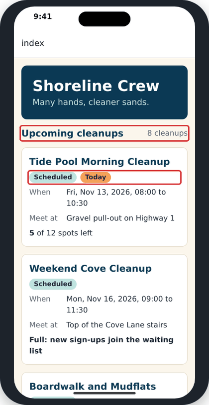

Session 4: Flexbox the Native Way
How to teach the fourth session of React Native & Expo: Build and Ship a Mobile App: React Native's flexbox from the four defaults that differ from CSS, the two axes and the badge that stretches into a bar, the type checker naming four layout mistakes in the course app, a lab on a beach's info panel and the start of Cards with Structure, where the web preview disagrees with a phone; then Checkpoint 1 on Modules 1 and 2 (a type guard, a web card rebuilt for a phone, its layout) with a five-row rubric.
How to Use This Guide
- Same rhythm as every session: frame (one mental model) → live demo (you type, they follow) → guided lab (new practice, never the lesson's own project) → start the lesson's own project. The rest of the project, the exercises, the quiz and the journal are homework. Session 4 adds Checkpoint 1 (30 minutes, Modules 1 and 2 so far) and its debrief after the project.
- Type, do not paste. Every command below was run to produce the output printed under it, in a learner's terminal on a copy of the app exactly as a learner has it after Lesson 2.2 (Expo SDK 58, TypeScript 6.0). The two type errors the lesson shows are the lesson's cards, line for line; the kit cuts the same long
The expected type comes from …dump the lesson cuts. Ask for a prediction before every run. - Layout needs eyes, and no phone was used to make this kit. Jest renders components without measuring them, so the labs read the flexbox styles you give each box, and the web preview on the projector shows what they do. The numbers in this guide (a badge 340 wide instead of 93, a screen View 48 tall instead of 780) are the lesson's own web-preview measurements. What a phone does differently (a Text in a row that does not shrink) is said the way the lesson says it: "should", from Yoga's source. Have your own phone with Expo Go ready: until Lesson 5.1 it shows the layout without data.
- The lesson is the reference: keep
lesson_05.htmlopen for the defaults table, the axes picture, the patterns table and the preview-versus-phone table. Labs live inlabs/module-04/:starter/folders andTASKS.mdare handouts;solution/folders are yours until the session is over (the checkpoint's until the debrief).
Lesson 2.2 runs 140 minutes alone; the room has 80 for it, then 30 for the checkpoint and 20 for its debrief. Hold the clock: the project start ends at 1:45 wherever the room is (Steps 1 to 3 can finish at home), and the checkpoint starts at 2:00 sharp, because a checkpoint that shrinks to 15 minutes measures typing speed. If the demo runs long, cut the "table that must be complete" step first (it is in the self-check).
Before the Session
- ☐ Run the kit check once:
python3 labs/check_labs.py module-04from this kit's folder (12 runs, under two minutes, no API needed: both starters fail as shipped, both solutions pass their tests, type checks and lint, and the lab's solution exports for the web). - ☐ Projector machine: the course folder with the stage after Lesson 2.2 (
lesson-05-endfrom the course downloads) for the demo, the API in terminal 1, Metro in terminal 2 with the web preview open at a phone size (the browser's device toolbar, 390 wide); VS Code at a large font;lesson_05.htmlin a tab. A learner who arrives without Lesson 2.1's code unzipslesson-05-start(the code after Lesson 2.1) and runsnpm installinshoreline-crew. - ☐ Board, before learners arrive: the four defaults that differ (column · flexShrink 0 · alignContent flex-start · flex = one number); a column and a row with their two arrows (main axis, cross axis); the reflex in a box: "text in a row gets flex: 1 or flexShrink: 1"; the checkpoint's start time.
- ☐ Checkpoint: share
labs/module-04/checkpoint-1/TASKS.mdand the starter (no solution), five rubric rows on a sticky note per learner (or the guide's rubric printed), and decide how results come back: each learner writes their lastTests:line and the two sentences on the workbook's checkpoint page. - ☐ Print or share: the workbook (the checkpoint page included) and sticky notes for the exit ticket.
Session 4 Agenda (3 hours)
| Clock | Minutes | Segment | What happens |
|---|---|---|---|
| 0:00 | 10 | Warm-up: Lesson 2.1 retrieval | Three questions from memory: a '16px' padding, what inherits on a phone, which style in an array wins. |
| 0:10 | 10 | 2.2 Frame and mental model | Every View is a flex column; the four defaults that differ; the crew lining up on the beach; main and cross axes. |
| 0:20 | 20 | 2.2 Live demo | Rows, stretch and the badge bar, the header row, flex as a number: the type checker on four layout mistakes in the course app. |
| 0:40 | 20 | 2.2 Guided lab | labs/module-04/l2_2-flexbox-the-native-way/starter: Tasks 1 and 2 in pairs (a header row, label and value). |
| 1:00 | 10 | Break | Leave the four defaults and the two axes on the board. |
| 1:10 | 35 | 2.2 Start the lesson project | Steps 1 to 3: the Screen component, Badge and StatusBadge, the card's rows. |
| 1:45 | 15 | 2.2 Break it on purpose | Step 5 on the projector: the room predicts each change before you save it; where the web preview disagrees. |
| 2:00 | 30 | Checkpoint 1: Modules 1 and 2 so far | labs/module-04/checkpoint-1/starter: on your own, open book: a type guard, a web card rebuilt for a phone, its layout. |
| 2:30 | 20 | Checkpoint debrief and review | The model answer part by part, the rubric's five rows, self-check Q7 to Q12 together. |
| 2:50 | 10 | Wrap-up | Exit ticket (3 questions), homework, bring list for Session 5. |
| Total | 180 | Ends at 3:00. |
In the room. The lesson page estimates 140 minutes for a learner working alone; after the warm-up, the break, the checkpoint with its debrief and the wrap-up the room has 100. It keeps the lesson's full shape (model, demo, lab, project start) and turns Step 5 (break it on purpose) into a whole-room prediction game, because predicting a layout before it moves is the skill.
Goes home (about 2 to 3 hours). The lesson project's Steps 4 to 6 (the header row with the count, Step 5's five breaks on their own screen, the two checks and the commit) and whatever of Steps 1 to 3 the room did not finish; Lab 2.2 Task 3 and its stretch; Hands-on Exercises 1 to 3 (Exercise 4, the date tile, is a stretch); the Quick Quiz; the journal (the four defaults from memory); any checkpoint part not finished in class, until Tests: 5 passed, 5 total and two silent checks.
Protect, in this order: the full 30 minutes of the checkpoint; the "badge that became a bar" and "where the web preview disagrees" demo steps; Steps 1 to 3 of the project started in the room. Cut first: the "table that must be complete" demo step, then the lab's Task 2 (it goes home), then the break-it game (learners do Step 5 at home).
Opening Segment
Warm-up: Lesson 2.1 Retrieval
10 min| 5m | Three questions from memory, in the workbook's warm-up box |
| 5m | Reveal and connect each answer to today |
padding: '16px'type-checks. What does a phone do with it? Lesson 2.1: React Native 0.88's types accept any string there, the web preview obeys it, and a phone should ignore it (the lesson read React Native's source; a phone was not run). Numbers without units:padding: 16. Today:flex: '1 1 0%'is the opposite case: a type error.- What inherits text styles on a phone? Only a Text inside a Text; a View passes nothing to its Texts (Lesson 2.1's tide pools). Today: layout does not inherit either: every View is its own flex column.
- In
[styles.base, styles[variant], style], which entry wins? The last; false, null and undefined are skipped. Today: Badge uses two such arrays, one for the box and one for the word.
- Learners who did not finish Lesson 2.1's project: unzip
lesson-05-startnow (it is the code after Lesson 2.1),npm installinshoreline-crew, and they start Step 1 with everyone. Their own version goes home.
Lesson Plans
Flexbox the Native Way
100 min- Explain how React Native's flexbox differs from CSS: every View is a flex column, flex is a single number, nothing shrinks by default, and there is no grid
- Line things up along the main and cross axes with flexDirection, justifyContent, alignItems, alignSelf, flexWrap and gap
- Size boxes with flex, fixed widths and percentages, and keep text inside a row from running off the screen
- Build the common phone layouts: a header row, label and value side by side, a wrapping row of badges, a centered message, a bar pinned to the bottom
- Make a screen fill the phone with flex: 1, and say where the web preview's layout can differ from a phone's
| 10m | Frame: every View is a flex column; the four defaults that differ; the crew on the beach; main and cross axes |
| 20m | Live demo: column and row, the badge bar, the header row, four layout mistakes the type checker names, where the preview disagrees |
| 20m | Guided lab: l2_2-flexbox-the-native-way/starter, Tasks 1 and 2 in pairs |
| 35m | Start the lesson project: Steps 1 to 3 (after the break) |
| 15m | Break it on purpose: Step 5 as a prediction game |
From the lesson: "Picture the volunteers gathering at the meeting point. Unless someone gives directions, they line up single file down the beach, away from the water: that is the default column. Say 'row' and they stand shoulder to shoulder along the tide line instead. justifyContent is where they stand along the line. alignItems is how each person stands across it, and the default, 'stretch', has everyone reaching all the way from the dunes to the water. And because nobody likes being squeezed, nobody shrinks to make room unless you ask: if the line is too long for the beach, the last people end up standing in the sea."
Then the map from the lesson: Yoga lays out every screen on Android and iOS with the same engine; the web preview uses the browser's flexbox through react-native-web, almost but not always the same. Sizes come three ways (a number, a percentage string, flex: 1 for "the rest") or from the content. No grid, no floats, position: 'absolute' only for small overlays. Write text in a row gets flex: 1 or flexShrink: 1 in a box on the board.
On the projector, the course app as it is after Lesson 2.2 (lesson-05-end), web preview at 390 wide. Learners watch and predict; they type in the lab and the project. Undo every change before the next step.
- Every View is a column (3m). Open the lesson's Supplies snippet (Every View Is a Flex Column) in a scratch screen of the web preview, or just draw it: three Texts with no layout styles stack top to bottom. Add
flexDirection: 'row'and save. "One line changed the main axis. What do you expect justifyContent to do now?" Write the four defaults that differ on the board: column, flexShrink 0, alignContent flex-start, flex is one number. - The badge that became a bar (3m). In the stage app (the finished Lesson 2.2 code on the projector), put a
<StatusBadge status="scheduled" />straight into the card, under the title, outside the badge row. Ask first: "How wide will it be?" In the web preview it is a bar across the card: the lesson measured 340 units instead of 93. ThenalignSelf: 'flex-start'on the badge (or back into the row). Undo. - The header row (3m). Show the lesson's header row and say the two jobs out loud: justifyContent along the main axis (space-between pushes the count to the end), alignItems across it (center lines the two up through their middles). The heading gets
flexShrink: 1, notflex: 1: ask why (self-check Q6).shoreline-crew/src/app/index.tsxsectionHeader: { flexDirection: 'row', justifyContent: 'space-between', alignItems: 'center', gap: spacing.sm, }, - Swapped axes: the type checker knows the values (3m). Make the classic mistake in the same style:
alignItems: 'space-between'. Prediction first: "will anything complain?"npx tsc --noEmit
src/app/index.tsx:81:5 - error TS2322: Type '"space-between"' is not assignable to type '"center" | "flex-start" | "flex-end" | "stretch" | "baseline" | undefined'. 81 alignItems: 'space-between', ~~~~~~~~~~ node_modules/react-native/types_generated/Libraries/StyleSheet/StyleSheetTypes.d.ts:471:3 471 alignItems?: "flex-start" | "flex-end" | "center" | "stretch" | "baseline" | undefined; ~~~~~~~~~~ Found 1 error in src/app/index.tsx:81The message lists every value alignItems accepts: space-between is justifyContent's. A wrong axis with a VALID value (justifyContent: 'center'meaning up-and-down) gives no error at all: only looking at the screen tells you. Undo. - Flex is a number, and there is no grid (4m). The lesson's two Common Mistakes, typed into the course app:
flex: '1 1 0%'in Screen.tsx, then (undone)display: 'grid'instead offlexDirection: 'row'in EventCard's badges style. The kit's runs equal the lesson's cards, line for line (the cards cut the long type dump; so does this guide):npx tsc --noEmit
src/components/Screen.tsx:28:5 - error TS2322: Type 'string' is not assignable to type 'number'. 28 flex: '1 1 0%', // fill the space the navigator gives the screen, not just the content's height ~~~~ node_modules/react-native/types_generated/Libraries/StyleSheet/StyleSheetTypes.d.ts:514:3 514 flex?: number | undefined; ~~~~ Found 1 error in src/components/Screen.tsx:28 src/components/EventCard.tsx:76:5 - error TS2322: Type '"grid"' is not assignable to type '"none" | "flex" | "contents" | undefined'. 76 display: 'grid', ~~~~~~~ node_modules/react-native/types_generated/Libraries/StyleSheet/StyleSheetTypes.d.ts:68:3 68 display?: "none" | "flex" | "contents" | undefined; ~~~~~~~ Found 1 error in src/components/EventCard.tsx:76Read them in the 2.1 way: find the line and the property, skip the type dump. Then: flex: 1; grids are rows of flex: 1 boxes or lists with columns (Module 3). - A table that must be complete (2m). StatusBadge's table is copied from the HQ (plain data, Lesson 1.3's rule). Delete the Draft line, and give BadgeTone a sixth tone
'warning'without its two styles:npx tsc --noEmit
src/components/StatusBadge.tsx:5:7 - error TS2741: Property 'draft' is missing in type '{ scheduled: { label: string; tone: "info"; }; completed: { label: string; tone: "success"; }; cancelled: { label: string; tone: "danger"; }; }' but required in type 'Record<EventStatus, { label: string; tone: BadgeTone; }>'. Found 1 error in src/components/StatusBadge.tsx:5 src/components/Badge.tsx:16:33 - error TS7053: Element implicitly has an 'any' type because expression of type 'BadgeTone' can't be used to index type 'Readonly<{ info: { backgroundColor: "#bfe3df"; }; success: { backgroundColor: "#2d6a4f"; }; neutral: { borderWidth: number; borderColor: "#5b6573"; }; danger: { backgroundColor: "#b23a22"; }; attention: { ...; }; }>'. src/components/Badge.tsx:17:38 - error TS7053: Element implicitly has an 'any' type because expression of type 'BadgeTone' can't be used to index type 'Readonly<{ info: { color: "#1f2a37"; }; success: { color: "#ffffff"; }; neutral: { color: "#1f2a37"; }; danger: { color: "#ffffff"; }; attention: { color: "#1f2a37"; }; }>'. Found 2 errors in the same file, starting at: src/components/Badge.tsx:16Record<EventStatus, …>wants every status;boxes[tone]wants a style for every tone. Undo both. Then the two checks the project's AGENTS.md asks for:npx expo lintprints only Expo's twoenv:lines,npx tsc --noEmitnothing. - Where the web preview disagrees (2m). Say it plainly with the lesson's table (Where the Web Preview Disagrees): react-native-web gives Views React Native's defaults, but a Text keeps the browser's
flex-shrink: 1. In a row, a long value without flex: 1 wraps in the preview (and squeezes the label to about 35), while a phone's Yoga should keep its width and run past the card. The course could not run a phone while it was checked: the lesson measured the preview and reasoned about the phone from Yoga's source. The habit: text in a row gets flex: 1 or flexShrink: 1, whatever the preview shows.
- Axes swapped after switching to a row.
justifyContent: 'center'now centers sideways. Coach: "Which way does the main axis point now? justifyContent follows the arrow." (The board's two arrows; the lesson's quiz Q5.) - Text in a row with no flex. The preview looks right, so it stays. Coach: "Who shares this row with the text? Then flex: 1 or flexShrink: 1, before you look." (Self-check Q4 and Q5.)
- A screen or wrapper View without flex: 1. The page color stops under the content, a centered message sits at the top, a ScrollView will not scroll. Coach: "How tall is this View? As tall as its content: give it flex: 1, or use Screen." (The lesson's quiz Q4.)
Folder: learners work in labs/module-04/l2_2-flexbox-the-native-way/starter/ (task sheet labs/module-04/l2_2-flexbox-the-native-way/TASKS.md); your reference is labs/module-04/l2_2-flexbox-the-native-way/solution/. New material, not the lesson's EventCard: an info panel for one of the crew's beaches (from a real GET /api/sites answer in fixtures/), with a header row, a label/value row and a wrapping row of tags. Jest cannot measure a layout, so the tests read the flexbox styles of each box (toHaveStyle); npm run web shows what they do. Uses the shared lab install: nothing to install.
- Run it as shipped (2m).
npm testin the lab'sstarter: all five tests fail (the panel test needs Task 3's function). Read the style failures together: a toHaveStyle failure lists what was expected and not found.
expect(instance).toHaveStyle() - Expected + Received - flexDirection: "row"; - flexWrap: "wrap";
And npm run typecheck on the starter prints nothing after its two > lines: no layout mistake here is a type error.
- Tasks 1 and 2 in pairs (14m): the header row (which property for the row, which for the far end, which for the middles; the name gets flexShrink 1 or flex 1?), then the label width 88 and the value's flex 1. Circulate for learners who put
justifyContent: 'center'on the header (the axes again) and forflex: 1on the name (the town sticks to it: no free space left for space-between). - Debrief (4m): "Would the web preview have shown Task 2's bug?" (maybe not: a Text shrinks there like CSS). "Why can Jest not tell you the badge is too wide?" (it renders without measuring: it only sees the styles).
- Expected when all three tasks are done (Task 3 goes home if the room runs short): the solution's run ends
PASS src/lab.test.tsx ✓ Task 1: the header row puts the town at the far end, lined up with the name ✓ Task 2: the label keeps 88 and the value takes the rest of the row ✓ Task 3: the tags come from the real beaches ✓ Task 3: the tags sit in a wrapping row ✓ the panel shows all three parts Tests: 5 passed, 5 total
and npx expo export --platform web bundles it (Exported: dist). Fast finishers: Task 3 and the stretch (a "Full" pill straight in the card, fixed two ways).
The lesson project is Cards with Structure, six steps. In the room, Steps 1 to 3 (35 minutes, after the break): learners type, you circulate.
- Step 1 (10m):
src/components/Screen.tsxand<Screen scroll>in index.tsx. Done = the screen looks exactly as before. Ask: "which branch of Screen needs flex: 1 most, and why?" (the View one: a ScrollView already grows). - Step 2 (12m): Badge (five tones, two style arrays) and StatusBadge (the HQ's table, copied). Point at
boxes[tone]: the demo showed what tsc says about a tone without its style. - Step 3 (13m): EventCard rewritten with the badge row and the Detail rows. Done in the room = the first card shows Scheduled and Today, and every card a column of labels with values beside them, in the web preview.
- Goes home: Step 4 (the header row with the count), Step 5 (the five breaks on their own screen), Step 6 (the two checks and the commit). This is the code Session 5 builds on: the finished version is
lesson-05-endin the course downloads.
The card's new piece, the label-and-value pattern, as the stage has it:
// A label and its value side by side: the label keeps its width, the value takes the rest function Detail({ label, children }: DetailProps) { return ( <View style={styles.detail}> <AppText variant="muted" style={styles.detailLabel}> {label} </AppText> <AppText style={styles.detailValue}>{children}</AppText> </View> ); }

On the projector, one change at a time: say the change, the room predicts (fingers: 1 = nothing moves, 2 = it moves, then say how), save, look, undo. The numbers are the lesson's web-preview measurements; learners repeat the five on their own screen at home.
- Delete
flexDirection: 'row',andflexWrap: 'wrap',in the badges style: full-width bars, one under the other (324 instead of 102: the column's stretch). - Put them back, delete only
flexDirection: 'row',: the badges stack but stay narrow:alignContent: 'flex-start'with wrapping on. - Delete
width: 72,in detailLabel: the values no longer line up (87 and 102). - Delete
justifyContent: 'space-between',in sectionHeader: the count moves next to the heading, 8 away (the gap). - Delete
flex: 1,in detailValue: in the preview almost nothing changes. Ask: "so is it safe to delete?" No: the preview disagrees with a phone here (the lesson's table). The phone side is the lesson's reasoning from Yoga's source: check it on your own phone after Lesson 5.1 brings data.

Ask these out loud during the demo, the lab and the game:
- What are the four defaults that differ from CSS? Answer: flexDirection column, flexShrink 0, alignContent flex-start, flex is one number.
- In a row, which property puts the count at the far end, and which lines both up through their middles? Answer: justifyContent: 'space-between'; alignItems: 'center'.
- Why does a badge placed straight in a card become a bar? Answer: the card is a column and alignItems defaults to stretch.
- A screen's background stops halfway down. What is missing? Answer: flex: 1 on the outermost View (or Screen).
Workbook self-check, items Q1 to Q6 (learners do them at home, or in the debrief if time allows).
Answers: Q1 A) A bar of color as wide as its parent; Q2 error TS2322: Type 'string' is not assignable to type 'number'. Write flex: 1 (or flexGrow, flexShrink and flexBasis as three properties); Q3 C) Move space-between to justifyContent and keep alignItems: 'center'; Q4 B) So it takes the space the label leaves and wraps inside it, instead of running past the card on a phone; Q5 D) Nothing yet: the web preview lets a Text shrink like CSS, while a phone's Yoga does not; Q6 B) With flex: 1 the heading would take all the free space, leaving space-between nothing to push the count with. Full set with explanations in the Answer Key.
Support: a card with the two arrows and four lines: "row? justifyContent goes across · alignItems goes the other way · text in a row: flex 1 or flexShrink 1 · screens: flex 1". Pair learners who confuse the axes with someone who draws them before typing.
Stretch: the lesson's Exercise 4 (the date tile, with its large-text weakness) and the Bonus Challenge (onLayout logging, then compare the preview's widths with a phone's after Lesson 5.1); Lab 2.2's stretch.
Checkpoint 1
Checkpoint 1: Modules 1 and 2 So Far
30 + 20 min| 2m | Hand out, read TASKS.md together; open book, own screen only |
| 28m | Work alone: Parts A to C in checkpoint-1/starter, then the two sentences |
| 20m | Debrief: the model answer part by part, the rubric, self-check Q7 to Q12 |
- Folder:
labs/module-04/checkpoint-1/starter/, task sheetlabs/module-04/checkpoint-1/TASKS.md; the model answer islabs/module-04/checkpoint-1/solution/(the Answer Key prints it). One small piece of a phone app built with Lessons 1.1 to 2.2: a beach card for the crew's six beaches, from the same realGET /api/sitesanswer as the lab. - Part A (Lesson 1.3): the type guard
isSite(value: unknown): value is Site. Part B (1.1, 2.1): every word in a Text, the name as the heading,onPressnotonClick, the saved look as a style array. Part C (2.2): the header row, the label/value row, the badge only as wide as its words. Checks (1.2):npm test,npm run typecheck,npm run lint, and two sentences. - As shipped, all five tests fail and both checks are silent: the starter's mistakes are the kind tsc and the linter cannot see (this is the point of the two sentences):
● A: the guard accepts every beach the API sent TODO A: check the value ● A: the guard refuses what is not a beach TODO A: check the value ● B: the card shows the beach, every word in a Text, the name as its heading Invariant Violation: Text strings must be rendered within a <Text> component. Detected attempt to render "Parking" string within a <View> component. ● B: a finger saves the beach, and the button changes its look Invariant Violation: Text strings must be rendered within a <Text> component. Detected attempt to render "Parking" string within a <View> component. ● C: the header row, the parking row and the badge are laid out for a phone Invariant Violation: Text strings must be rendered within a <Text> component. Detected attempt to render "Parking" string within a <View> component.
- While they work: circulate with the rubric and note one row per learner you see clearly (row 5 is the easiest to see: who runs the checks after each change?). Answer questions about the task, not about the code. At 26 minutes everyone runs
npm testonce more and writes theTests:line on the workbook's checkpoint page. - Collect the checkpoint page (or a photo of it) with the
Tests:line and the two sentences; score the five rows after class and hand them back in Session 5's warm-up.
| Criterion | Meets (2) | Partly (1) | Not yet (0) |
|---|---|---|---|
| 1. Native building blocks (1.1, 2.1) | Every word in a Text, the name is the heading, the button works with onPress (tests B pass) | Renders, but the heading role or the press is missing | Still a red screen: loose text, or onClick |
| 2. Styles (2.1) | Only StyleSheet styles, numbers without units; the saved look is a style array [styles.button, saved && styles.buttonSaved] | Works, but with an inline object or a duplicated style instead of the array | No saved look, or CSS strings |
| 3. Layout (2.2) | Header row (row, space-between, center, name flexShrink 1), label width 72 + value flex 1, badge alignSelf flex-start (test C passes) | Two of the three | One or none |
| 4. Shared code (1.3) | isSite checks every field and the four terrains, no any or as; both tests A pass | Checks most fields, or uses a cast inside | Still the TODO, or return true |
| 5. Checks and reasons (1.2, 2.2) | npm test 5 passed, typecheck and lint print nothing; the two sentences name tsc's blind spot (loose text, onClick) and the preview's (text in a row) | All green but the sentences are missing or vague | Never ran the checks |
Reading the score: 7 to 10 = on track for Part 1; 4 to 6 = reread the lesson section of the lowest row before Session 5 and redo that part; 0 to 3 = a conversation, and a catch-up plan with the matching labs (1.1, 2.1, 2.2). The checkpoint is formative: it does not count toward the Part 1 assessment (Session 9).
- Part A (5m): show the model guard (Answer Key). Ask who used
as: it compiles and checks nothing. Connect to the app: Lesson 1.3's client does exactly this for every API answer. - Parts B and C (8m): the model card side by side with the starter. For each mistake ask "which tool would have found it?": loose text and onClick only by running it; the layout only by looking (and the preview may hide the value without flex: 1).
- Self-check Q7 to Q12 (7m): together, fingers up for A to D; the two short answers aloud.
Answers: Q7 A) A status the API can send that the badge would have no label or tone for; Q8 D) A string ("Parking") sits straight inside a View, outside a Text; Q9 C) Nothing: tsc and the linter are silent, and a finger's press does nothing; Q10 response.json() gives a value nothing has checked; a guard checks it at run time and narrows the type, while as only tells TypeScript to trust it; Q11 B) #b23a22: in a style array, later entries win; Q12 D) Its own color: on a phone only a Text inside a Text inherits text styles. Full set with explanations in the Answer Key.
Closing
Learners answer in the workbook's Exit Ticket box or on a sticky note. Question 2's pile tells you whether Session 5 needs a minute on the preview-versus-phone habit before images arrive.
- Name two of the four flexbox defaults that differ from CSS, and what each one does on a screen. Answer: any two of: column (children stack top to bottom), flexShrink 0 (nothing shrinks, long text can run off), alignContent flex-start (wrapped lines stay at the start), flex is one number (a share of the free space).
- A long value in a label/value row looks fine in the web preview without flex: 1. Why add it anyway? Answer: the preview lets a Text shrink like CSS; on a phone it keeps its width (flexShrink 0) and can run past the card.
- Which two styles make a header row with a heading on the left and a count on the right, both centered? Answer: justifyContent: 'space-between' and alignItems: 'center' (on a row; the heading gets flexShrink: 1).
- Finish the lesson project. Steps 4 to 6 (the header row with the count, the five breaks on your own screen,
npx expo lintandnpx tsc --noEmit, the commit) and the completion checklist. - Lesson exercises: 1 (SpotsBar with theme colors), 2 (We bring), 3 (a centered loading state); 4 (the date tile) is a stretch.
- The Quick Quiz on the lesson page (five questions; answers in the Answer Key).
- Lab 2.2: Task 3 (and Tasks 1 and 2 if unfinished) and the stretch.
- Checkpoint 1: any part whose test still fails, until
Tests: 5 passed, 5 totaland two silent checks; then reread the lesson section of your lowest rubric row. - Journal: the four defaults from memory, each with one thing on the Cleanups screen that would look different without its override; which break surprised you most.
- Before the Next Lesson (from 2.2): the badges and label/value rows in the web preview, committed; look at the top and bottom edges of a few apps on your phone: what sits behind the status bar and the home indicator?
- The course folder with
shoreline-crewat the end of Lesson 2.2 (orlesson-05-endfrom the course downloads), the API in its own terminal. - Session 5 (Lesson 2.3) adds pictures, icons, the Outfit font and safe areas: the Screen component from today is where the safe areas go.
npx expo installneeds the network. - A phone with Expo Go if they have one (notches and home indicators are the point of 2.3), the workbook with the checkpoint page, the journal.
If You Run Long or Short
- Protect: the checkpoint's 30 minutes; the badge-bar and preview-disagrees demo steps; Steps 1 to 3 started in the room.
- Cut first (saves 2m): the "table that must be complete" demo step (it is self-check Q7).
- Cut second (saves 8m): the lab's Task 2: it goes home with Task 3.
- Cut third (saves 15m): the break-it game: learners do Step 5 at home; give the debrief 15 minutes instead of 20.
- Lesson 2.2's Exercise 2 together (We bring as neutral badges), then
alignItems: 'center'on that row: why do the label and the badges change height? - The lesson's patterns snippet: build CenteredMessage without
flex: 1first, then with it. - Exercise 3 live: the centered loading state and
flexGrow: 1on the content strip.